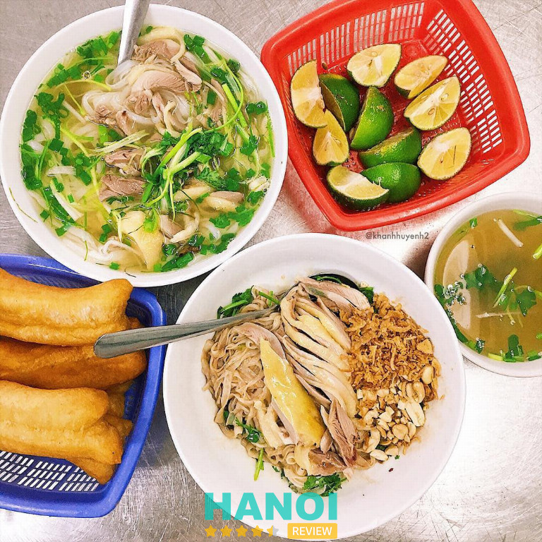
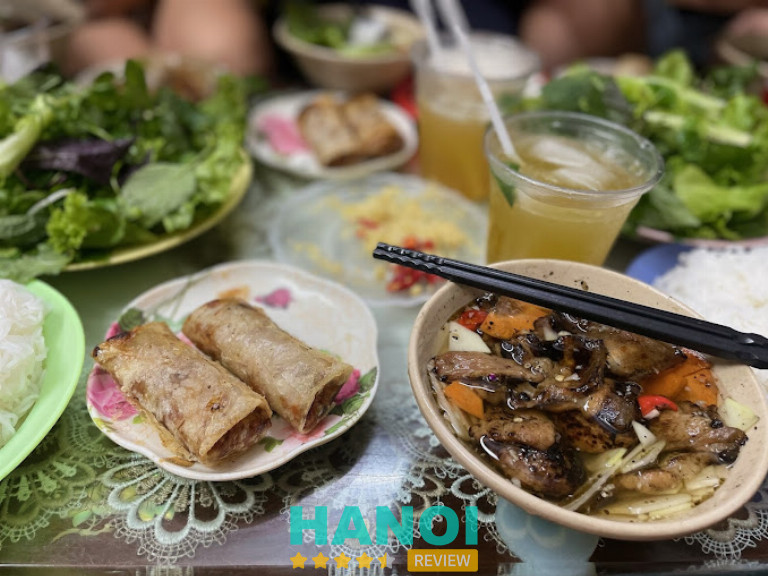
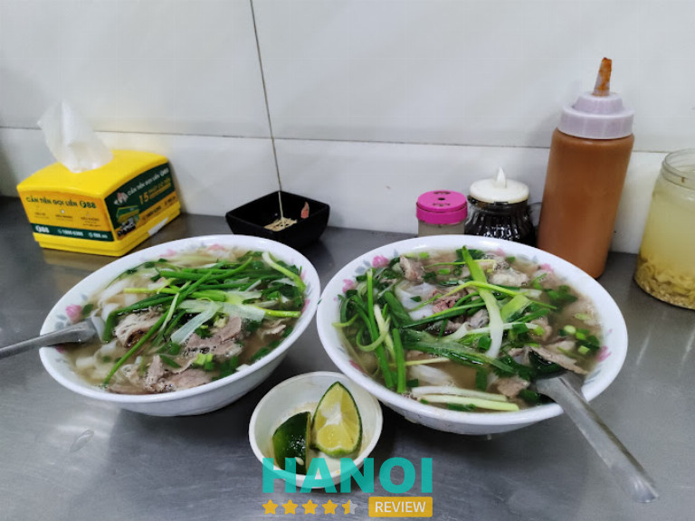
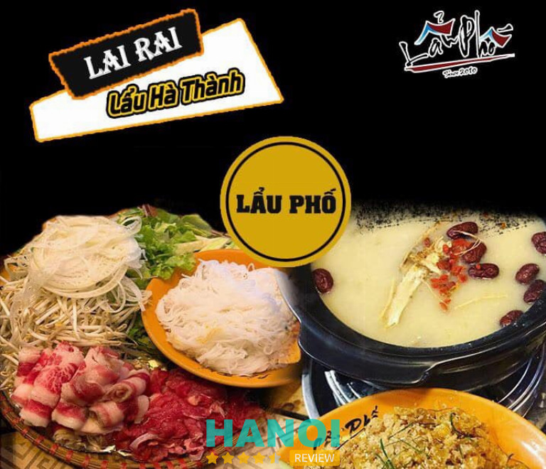
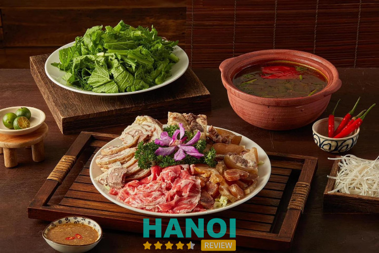
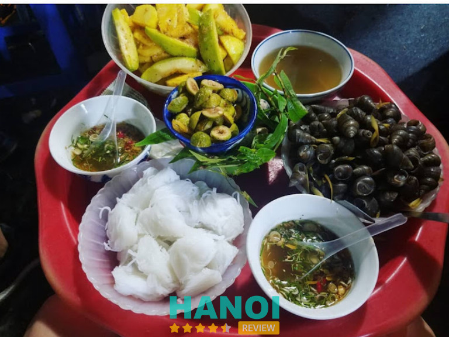
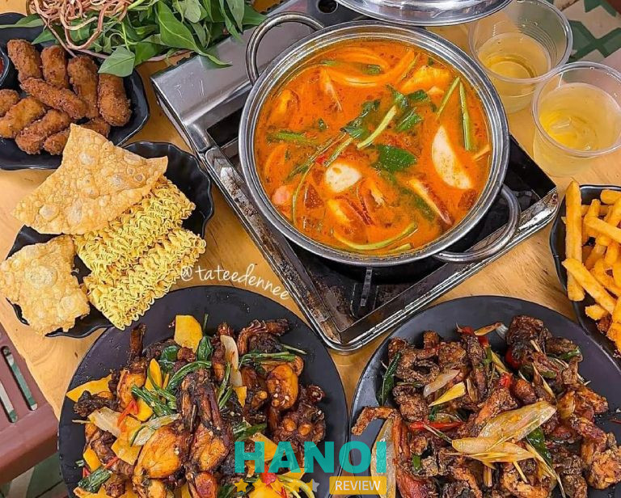
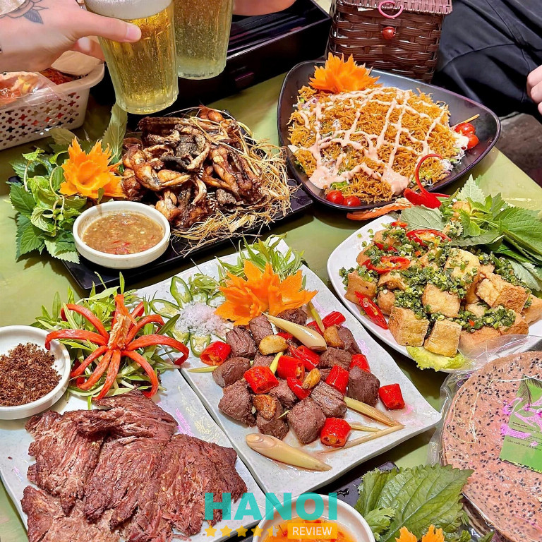
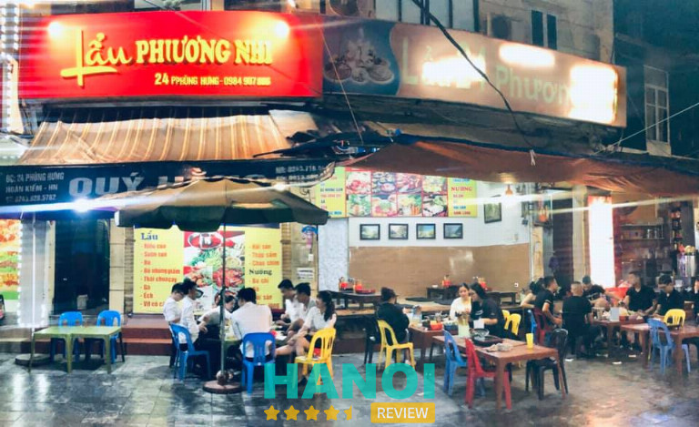
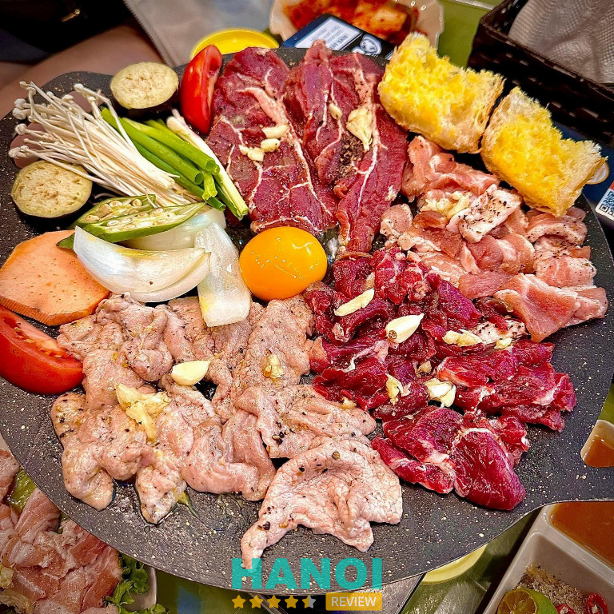

10 Quán ăn đêm khu vực Phố cổ Hà Nội ngon nổi tiếng nhất
Khắp các con phố của Hà Nội, đặc biệt là tại Phố cổ, có vô số quán ăn đêm với các món ngon đang chờ bạn khám phá. Những quán ăn đêm khu vực Phố cổ không chỉ mang hương vị đặc trưng mà còn đem lại không khí sôi động, lý tưởng cho trải nghiệm ẩm thực về đêm.
Top 10 Quán ăn đêm khu vực Phố cổ Hà Nội nổi tiếng, giá hợp lý
Phố cổ Hà Nội không chỉ nổi tiếng với những cảnh đẹp và kiến trúc cổ kính mà còn là thiên đường ẩm thực về đêm, thu hút đông đảo du khách và người dân địa phương. Khi màn đêm buông xuống, khu vực này trở nên sôi động với các quán ăn mở muộn, mang đến vô số món ngon đặc trưng và trải nghiệm thú vị.
Nếu bạn đang tìm kiếm những địa chỉ ăn đêm hấp dẫn giữa lòng Hà Nội, có thể cùng HaNoiReview khám phá những quán ăn khu vực Phố Cổ nổi bật bên dưới. Đây sẽ là những điểm dừng chân lý tưởng để thưởng thức trọn vẹn hương vị ẩm thực về đêm của thủ đô.
Phở Gà Nguyệt
Phở Gà Nguyệt 5B Phủ Doãn – một địa chỉ phở gà nổi tiếng giữa lòng Phố cổ, đã mở cửa từ năm 2009 và nhanh chóng ghi dấu trong lòng thực khách với hương vị đặc biệt của phở gà nước và phở gà khô. Nổi bật với danh hiệu Bib Gourmand từ Michelin trong hai năm liên tiếp 2023–2024, quán là một trong những điểm đến không thể thiếu trong danh sách top 10 quán ăn đêm tại khu vực Phố cổ.

Súp phở gà tại đây được đánh giá cao bởi độ đậm đà, hương vị gà tự nhiên, tạo nên bát phở đầy hấp dẫn và ấm lòng. Phở Gà Nguyệt mở cửa từ 6:30 sáng đến 12:30 đêm, là nơi lý tưởng cho mọi bữa ăn, từ bữa sáng sớm đến những bữa khuya muộn trong không khí bình dị của Hà Nội.
Giá tại Phở Gà Nguyệt:
- Phở lườn: 50.000VND
- Phở lưng, Phở lòng mề: 55.000VND
- Phở đùi, Phở cánh: 60.000VND
- Phở đùi cánh, Phở cánh lưng, Phở đùi lưng: 100.000VND
- Phở đùi lườn, Phở cánh lườn, Phở lưng lườn: 75.000VND
Phở Gà Nguyệt thu hút đông đảo thực khách địa phương và du khách, nhờ hương vị phở gà đặc trưng và danh tiếng lâu năm. Dù không gian quán hơi khiêm tốn, nhưng nhờ vào phong cách phục vụ nhanh nhẹn, quán vẫn mang lại trải nghiệm thoải mái và hài lòng cho khách hàng.
Thông tin liên hệ:
- Địa chỉ: 5b Phủ Doãn, P. Hàng Trống, Q. Hoàn Kiếm, Hà Nội
- Điện thoại: 0919 106 192
- Facebook: FB.com/phoganguyet
Bún Chả Hàng Quạt
Nếu bạn yêu thích hương vị bún chả Hà Nội chuẩn vị thì không thể bỏ qua Bún chả Hàng Quạt, một địa chỉ ăn uống nổi tiếng ngay tại lòng Phố cổ. Tuy diện tích quán khá nhỏ, không gian không quá cầu kỳ, nhưng chính sự giản dị này lại tạo nên một sức hút riêng biệt.

Khách đến đây không chỉ bị chinh phục bởi những suất bún chả thơm ngon mà còn cảm nhận được sự nhiệt tình, chu đáo trong từng cử chỉ phục vụ của chủ quán và nhân viên. Món bún chả của quán được chế biến theo công thức truyền thống. Những miếng thịt ba chỉ nướng cháy cạnh, thơm nức mũi, cùng với viên chả viên đậm đà hòa quyện cùng nước chấm chua ngọt đặc trưng, tạo nên một hương vị rất khó quên.
Món ăn còn đi kèm với đĩa rau sống tươi xanh, khiến thực khách vừa thưởng thức vị béo của thịt nướng, vừa tận hưởng sự thanh mát từ các loại rau sống. Đây cũng chính là điểm đặc biệt khiến Bún chả Hàng Quạt có sức hút mạnh mẽ đối với cả người dân địa phương lẫn du khách nước ngoài.
Là một trong những quán ăn đêm nổi tiếng ở khu Phố cổ, Bún chả Hàng Quạt đã trở thành điểm dừng chân quen thuộc cho những ai muốn khám phá Hà Nội về đêm. Chỉ cần một lần ghé qua, bạn sẽ hiểu tại sao nơi đây luôn là điểm đến yêu thích của các tín đồ ẩm thực, từ người bản xứ đến khách quốc tế.
Thông tin liên hệ:
- Địa chỉ: 74 P. Hàng Quạt, Hàng Gai, Hoàn Kiếm, Hà Nội
- Điện thoại: 0974 519 846
- Thời gian mở cửa: 10:00 – 2:00
Quán Phở Thịnh
Phở Thịnh ở Hàng Bột là một địa chỉ phở nổi tiếng với hơn 30 năm hoạt động, được nhiều thực khách trong và ngoài nước yêu thích nhờ hương vị truyền thống không thay đổi theo thời gian. Quán gây ấn tượng bởi chất lượng đồng đều từ nước dùng đến các nguyên liệu đi kèm, tạo nên một hương vị phở dễ nhận biết, đậm chất Hà Nội.
Điểm nổi bật của Phở Thịnh chính là nước dùng trong và thơm, được nấu kỹ để giữ nguyên vị ngọt tự nhiên mà không hề có mùi hôi thường thấy ở một số quán khác. Đây là lý do khiến nhiều thực khách cảm thấy yên tâm và thoải mái khi thưởng thức phở bò tại quán.

Thịt bò tái của quán được chọn lọc kỹ lưỡng, từng miếng thịt mềm ngọt, thơm ngon, giữ được độ tươi mới, hòa quyện hoàn hảo với nước dùng tạo nên sự đậm đà, quyến rũ khó cưỡng. Phở Thịnh sử dụng loại bánh phở tráng tay, mỏng và mềm, có bản to, giúp thực khách cảm nhận được hương vị đặc trưng của bánh phở truyền thống.
Bánh phở ăn vừa mềm vừa dai, không dễ bị nát khi ăn cùng nước dùng, tạo cảm giác thú vị khi thưởng thức. Bên cạnh đó, quán còn có khu vực đỗ xe ô tô rộng rãi, thuận tiện cho cả những khách hàng đến từ xa. Với không gian ấm cúng và hương vị phở đặc trưng, Phở Thịnh là nơi lý tưởng để bạn bắt đầu ngày mới với một tô phở nóng hổi, đậm đà hương vị truyền thống.
Thông tin liên hệ:
- Địa chỉ: 39 Tôn Đức Thắng, P. Quốc Tử Giám, Q. Hoàn Kiếm, Hà Nội
- Điện thoại: 0348 574 337
- Email: phothinhhangbot@gmail.com
- Facebook: FB.com/PhoThinhHangBot
- Thời gian mở cửa: 6:15 – 23:00
Khám phá: 10 Quán bún cá ngon nổi tiếng tại Hà Nội lâu đời nhất
Lẩu Phố
Lẩu Phố là một trong những địa điểm ăn đêm nổi tiếng tại Phố cổ Hà Nội, được biết đến với thực đơn phong phú, đa dạng và hương vị thơm ngon. Từ 16h00 chiều đến khuya mỗi ngày, quán luôn sẵn sàng phục vụ thực khách với những món lẩu độc đáo, đảm bảo sẽ làm hài lòng cả những khách hàng khó tính nhất.
Quán được thành lập từ năm 2019, đây là nơi lý tưởng để bạn thưởng thức ẩm thực cùng bạn bè, gia đình trong không gian rộng rãi, thoáng mát và sạch sẽ, đặc biệt là khu vực ban công mát mẻ và có view đẹp.

Menu của Lẩu Phố nổi bật với nhiều lựa chọn lẩu hấp dẫn, từ lẩu bốn vị đặc sắc cho đến những món lẩu riêng biệt như lẩu cua và lẩu sụn sườn, tất cả đều được chế biến cẩn thận để mang đến trải nghiệm ẩm thực tuyệt vời. Với hương vị đậm đà và các loại nguyên liệu tươi ngon, Lẩu Phố mang lại cảm giác mới mẻ, đặc biệt là với những ai yêu thích các món lẩu đa dạng và nhiều hương vị.
Không chỉ là quán ăn chất lượng, Lẩu Phố còn có mức giá hợp lý, phù hợp với nhiều đối tượng khách hàng. Đây là một lựa chọn tuyệt vời cho những buổi tụ tập cùng nhóm đông, nơi mọi người có thể thoải mái thưởng thức món ăn và tận hưởng không gian ấm cúng. Hãy lưu lại Lẩu Phố cho những buổi hẹn hò vào cuối ngày, khám phá thêm một phần thú vị của ẩm thực đêm tại Hà Nội.
Thông tin liên hệ:
- Địa chỉ: 5 Tống Duy Tân, P. Cửa Đông, Q. Hoàn Kiếm, Hà Nội
- Điện thoại: 0923 516 301
- Facebook: FB.com/LauPho5bTongDuyTan
- Thời gian mở cửa: 16:00 – Khuya
Lạ…Quán
Lạ…Quán là một địa điểm lý tưởng cho những ai yêu thích khám phá các món ăn lạ và lẩu ngon tại Phố cổ Hà Nội. Với không gian độc đáo, quán được thiết kế thành hai gian cách nhau hai nhà, mỗi gian đều có bàn ghế rộng rãi, thoải mái và được trang bị điều hòa mát mẻ.
Điểm đặc biệt tại Lạ…Quán là menu phong phú, hội tụ những món lẩu đa dạng cùng các món đặc sắc như canh tôm yum, … tất cả đều mang đến trải nghiệm ẩm thực không giới hạn. Đối với Lạ…Quán, mỗi bữa ăn không chỉ đơn thuần là việc thưởng thức mà còn là một hành trình khám phá văn hóa ẩm thực Việt Nam.

Sự sáng tạo trong cách chế biến từ các nguyên liệu tươi ngon nhất giúp mỗi món ăn trở nên đặc sắc và mang đậm tinh thần ẩm thực ba miền. Từ vị đậm đà của miền Bắc, sự hài hòa của miền Trung cho đến nét thanh thoát, ít dầu mỡ của miền Nam, Lạ…Quán tái hiện trọn vẹn những giá trị ẩm thực Việt thông qua từng món ăn, đem lại cảm giác mới mẻ và thú vị cho thực khách.
Không chỉ có hương vị độc đáo, nhân viên của Lạ…Quán còn được đánh giá cao bởi sự nhanh nhẹn, lịch sự và tận tâm, tạo nên không gian ẩm thực ấm cúng, dễ chịu. Với Lạ…Quán, bạn không chỉ đến để ăn mà còn để cảm nhận và hòa mình vào hành trình vị giác đầy sáng tạo, nơi mọi sự kết hợp đều hướng đến sự hài lòng của thực khách.
Thông tin liên hệ:
- Địa chỉ: 6A Hàng Lược, P. Hàng Mã, Q. Hoàn Kiếm, Hà Nội
- Điện thoại: 0989 995 711
- Email: laquanlauthai@gmail.com
- Facebook: FB.com/laquanlauthai
- Thời gian mở cửa: 10:000 – 2:00
Quán ốc bà câm
Quán “Ốc bà câm” trên phố ẩm thực Tống Duy Tân là một trong những địa điểm ăn ốc độc đáo bậc nhất, thu hút thực khách bởi trải nghiệm vô cùng khác biệt. Với gần 30 năm hoạt động, quán không chỉ nổi tiếng về hương vị món ăn mà còn bởi cách thức giao tiếp đặc biệt: khách và chủ quán giao tiếp với nhau qua những cử chỉ tay đơn giản. Chính nét đặc trưng này đã khiến nơi đây được yêu mến và gọi bằng cái tên thân thuộc “Ốc bà câm.”

Điều đặc biệt làm nên sự khác biệt của quán là tất cả nhân viên, bao gồm cả vợ chồng chủ quán – bà Hàn Tuyết Khánh và chồng, đều là người khiếm thính. Dù không có lời nói, nhưng nhờ sự tận tâm và tỉ mỉ của bà Khánh, thực khách vẫn cảm nhận được sự nhiệt tình và chu đáo trong từng món ăn.
Từ việc chọn ốc đến khâu chế biến, bà luôn chú trọng đến chất lượng. Ốc tại quán được lựa chọn kỹ càng để đảm bảo thịt ốc béo và ngọt. Quá trình chế biến cũng đòi hỏi sự cầu kỳ, từ việc làm sạch ốc, ngâm nước vo gạo để loại bỏ bùn đất, cho đến khi nấu lên vẫn giữ được độ tươi ngon tự nhiên.
Dù món ốc nhìn qua tưởng đơn giản, nhưng ở “Ốc bà câm,” mỗi món ăn là cả một nghệ thuật và niềm đam mê ẩm thực của người chế biến. Đến với “Ốc bà câm,” bạn sẽ không chỉ thưởng thức hương vị thơm ngon, đậm đà mà còn cảm nhận được câu chuyện đầy ý nghĩa và sự gắn kết đặc biệt giữa chủ quán và thực khách thông qua ngôn ngữ của những cử chỉ chân thành.
Thông tin liên hệ:
- Địa chỉ: 5 Tống Duy Tân, P. Hàng Bông, Q. Hoàn Kiếm, Hà Nội
- Điện thoại: 0946 949 619
- Thời gian mở cửa: 7:30 – 23:00 (thứ Hai đến thứ Sáu) | 7:30 – 12:00 (thứ Bảy đến Chủ nhật)
Tham khảo: 10 Quán Pub ở Hà Nội nổi tiếng, được nhiều người yêu thích nhất
Bệu Quán
Bệu Quán là một địa chỉ ăn đêm lý tưởng tại khu Phố cổ dành cho những ai yêu thích ẩm thực Hà Nội và muốn tìm một nơi dừng chân thư giãn sau một ngày dài. Quán mở cửa với 2 khung giờ linh hoạt, đáp ứng nhu cầu ăn uống bất kể thời điểm nào trong ngày của thực khách.

Bệu Quán nổi bật với món nướng và lẩu ngon đậm đà, vị nước dùng tinh tế, vừa miệng, phù hợp với khẩu vị của hầu hết thực khách. Đặc biệt, lẩu ếch của quán có phần ăn lớn, đầy đặn, luôn sử dụng nguyên liệu tươi ngon và được chế biến kỹ lưỡng, đảm bảo vệ sinh an toàn thực phẩm.
Không gian tại Bệu Quán được bố trí sạch sẽ, thoáng mát, khu vực trong nhà có điều hoà mát lạnh và khu vực ngoài trời thoáng đãng, tạo sự thoải mái tối đa cho thực khách. Đội ngũ nhân viên của quán phục vụ chu đáo và nhiệt tình, sẵn sàng hỗ trợ khách hàng và thường xuyên có các món tặng kèm thú vị.
Nếu bạn đang tìm kiếm một quán ăn đêm tại Phố cổ với chất lượng đồ ăn ngon, giá cả phải chăng và phục vụ tận tâm, có thể đến ngay Bệu Quán để trải nghiệm. Với hương vị tuyệt vời và không gian thoải mái, nơi đây chắc chắn sẽ mang lại cho bạn những khoảnh khắc thưởng thức ẩm thực đầy thú vị.
Thông tin liên hệ:
- Địa chỉ: 19 Hàng Lược, P. Hàng Mã, Q. Hoàn Kiếm, Hà Nội
- Điện thoại: 0356 502 468
- Facebook: FB.com/beuquanhangluoc
- Thời gian mở cửa: 10:30 – 14:00 và 16:00 – 24:00
Bò 888 Phùng Hưng
Bò 888 – Phùng Hưng là một điểm đến không thể bỏ lỡ cho những ai yêu thích các món bò tươi ngon khi ghé thăm Hà Nội. Nằm trên con phố Phùng Hưng, quán mở cửa từ 10:00 sáng đến tận nửa đêm, phục vụ thực khách với thực đơn đa dạng và phong phú.
Được biết đến với món bò tơ tươi sống chất lượng cao, Bò 888 đem đến hương vị đậm đà, khó quên qua các món đặc trưng như bò chao đảo, bò cháy tỏi sốt tiêu xanh, bò tơ cuốn 888 và nộm bò tiến vua, …

Không gian quán được thiết kế tinh tế với ba tầng, mỗi tầng mang một phong cách riêng biệt, tạo sự thoải mái và đa dạng cho thực khách. Điểm nhấn của Bò 888 chính là không khí ấm cúng, giản dị và đặc biệt là những khung cửa sổ mang nét thơ mộng đặc trưng của khu Phố cổ Hà Nội, biến nơi đây thành một “thiên đường sống ảo” cho các tín đồ chụp ảnh.
Một trong những món đặc biệt tại quán là lẩu giấm và lẩu Tomyum với nước dùng không quá cay nhưng đậm đà, hòa quyện hương vị chua cay đặc trưng của Thái Lan. Chả cá và lưỡi bò cũng là những món không thể bỏ qua, được đánh giá cao bởi độ ngon và giá cả hợp lý.
Nhân viên phục vụ chu đáo, thân thiện, tạo cảm giác thoải mái và gần gũi cho mỗi lần ghé thăm. Đến với Bò 888 – Phùng Hưng, bạn sẽ không chỉ được thưởng thức ẩm thực chất lượng mà còn cảm nhận được tinh hoa ẩm thực và nét đẹp bình dị của Hà Nội.
Thông tin liên hệ:
- Địa chỉ: 169 Phùng Hưng, P. Cửa Đông, Q. Hoàn Kiếm, Hà Nội
- Điện thoại: 0566 693 888
- Facebook: FB.com/LauboHoanKiem
- Thời gian mở cửa: 10:00 – 24:00
Lẩu Phương Nhi
Lẩu Phương Nhi là điểm đến hoàn hảo cho những ai yêu thích ẩm thực lẩu tại Phố cổ. Với thực đơn đa dạng chuyên về các món lẩu, quán phục vụ thực khách từ 12h trưa đến 24h mỗi ngày, tạo điều kiện thuận lợi cho cả những bữa trưa, tối và đặc biệt là những buổi ăn khuya.
Một trong những điểm nổi bật của Lẩu Phương Nhi chính là tốc độ phục vụ nhanh chóng. Ngay khi gọi món, thực khách sẽ không phải chờ đợi quá lâu để được thưởng thức món lẩu nóng hổi, đầy đặn và đậm đà hương vị.

Vị lẩu tại đây được chế biến công phu, tạo nên hương vị đặc trưng vừa ngon vừa hợp khẩu vị nhiều người. Đây là nơi lý tưởng cho các nhóm bạn hoặc gia đình bởi không gian ngoài trời rộng rãi, thoáng mát, giúp mọi người thoải mái trò chuyện và tận hưởng không khí vui vẻ cùng nhau.
Đội ngũ nhân viên của quán rất nhiệt tình và chu đáo, luôn sẵn sàng đáp ứng mọi nhu cầu của thực khách một cách tận tâm. Nhờ phong cách phục vụ chuyên nghiệp và thân thiện, mỗi lần ghé thăm Lẩu Phương Nhi đều mang đến cảm giác thoải mái và dễ chịu. Với không gian mở muộn và phong cách phục vụ thân thiện, nơi đây đã trở thành một trong những điểm ăn uống hấp dẫn cho cả thực khách địa phương và du khách.
Thông tin liên hệ:
- Địa chỉ: 24 Phùng Hưng, P. Cửa Đông, Q. Hoàn Kiếm, Hà Nội
- Điện thoại: 0984 907 886
- Email: quendiem750@gmail.com
- Facebook: FB.com/lauphuongnhi
- Thời gian mở cửa: 12:00 – 24:00
Bò nướng 1A Gầm Cầu
Bò Nướng 1A Gầm Cầu là điểm hẹn lý tưởng cho những tín đồ yêu thích bò nướng chảo bơ, không cần phải lên tận phố Gầm Cầu mà vẫn được thưởng thức hương vị chuẩn phố cổ. Là một trong những quán nầm nướng lâu đời nhất khu Phố cổ, Bò Nướng 1A đã gắn bó với nhiều thế hệ thực khách, đặc biệt là những người thuộc thế hệ 8x và 9x.

Thực đơn buffet tại đây phong phú với các loại thịt như bò, ba chỉ heo và nổi bật là ba chỉ bò cuộn nấm. Mỗi set bao gồm bò cuộn nấm kim, bò ta, xúc xích, nầm, ba chỉ heo, kèm theo kim chi và rau củ, đảm bảo một bữa ăn trọn vị. Đặc biệt, khi gọi bò nướng tảng, thực khách sẽ được tặng kèm sốt trứng muối béo thơm, chấm cùng bò medium nướng tươi mang đến hương vị đậm đà khó quên.
Không chỉ đa dạng về đồ nướng, Bò Nướng 1A Gầm Cầu còn phục vụ tới 5 loại nước chấm để khách hàng tùy chọn, trong đó sốt tương ngọt mặn và sốt me là được yêu thích nhất. Món nầm nướng dai giòn vừa miệng, ăn kèm salad, kim chi và dưa chuột giúp giảm ngấy hiệu quả.
Quán cũng có nhiều loại soju hấp dẫn, thêm phần nhâm nhi khi thưởng thức đồ nướng. Phục vụ nhanh, thân thiện và không gian thoáng mát, Bò Nướng 1A là địa điểm hoàn hảo để thưởng thức món nướng ngon vào bất kỳ lúc nào trong ngày, đặc biệt là vào những buổi tối muộn.
Thông tin liên hệ:
- Địa chỉ: 1A Gầm Cầu, P. Hàng Mã, Q. Hoàn Kiếm, Hà Nội
- Điện thoại: 0972 188 886
- Facebook: FB.com/bonuong1agamcau
- Thời gian mở cửa: 10:00 – 24:00
4 Kinh nghiệm quan trọng chọn quán ăn đêm khu vực Phố cổ Hà Nội
Để chọn được quán ăn đêm ở Phố cổ chất lượng, phù hợp với sở thích và ngân sách, bạn cần có một số kinh nghiệm hữu ích. Dưới đây là những gợi ý giúp bạn tìm ra điểm dừng chân hoàn hảo cho buổi ăn đêm tại Phố cổ của mình, để bạn có trải nghiệm ẩm thực tuyệt vời giữa không gian sôi động của phố cổ:
- Tìm hiểu về món ăn đặc trưng của quán:
Mỗi quán ăn đêm tại Phố cổ thường có món ăn đặc trưng riêng như phở gà, lẩu ếch, bò nướng, … Trước khi đến, bạn nên xem xét quán nổi bật với món gì để chọn đúng nơi theo khẩu vị. Những món này thường phản ánh được phong cách chế biến và hương vị truyền thống của quán, tạo ấn tượng riêng biệt trong lòng thực khách.
- Đánh giá không gian và tiện nghi của quán:
Không gian thoải mái, thoáng mát là yếu tố quan trọng, nhất là khi ăn đêm, bạn sẽ muốn không bị ám mùi thức ăn. Một số quán tại Phố cổ có không gian ngoài trời hoặc khu vực có điều hòa mát mẻ, phù hợp với cả những nhóm đông người và những bữa ăn thư giãn. Nếu đi nhóm, bạn hãy chọn quán có không gian rộng rãi, chỗ ngồi thoải mái.
- Tham khảo đánh giá về chất lượng phục vụ:
Phục vụ nhiệt tình và nhanh chóng sẽ giúp bạn cảm thấy thoải mái, nhất là vào buổi đêm khi đã mệt mỏi. Kiểm tra đánh giá của những người đã từng ghé qua về thái độ phục vụ của nhân viên và tốc độ lên món để đảm bảo trải nghiệm ăn uống “mượt mà” và không phải chờ đợi quá lâu.
- Xem xét mức giá và ưu đãi:
Giá cả hợp lý là yếu tố không thể bỏ qua khi chọn quán ăn đêm. Nhiều quán tại Phố cổ phục vụ các set ăn với mức giá phải chăng, đi kèm các món tặng kèm như rau, kim chi hay nước sốt đặc biệt. Trước khi đi, bạn có thể tham khảo thực đơn và giá cả để chắc chắn quán phù hợp với ngân sách của mình.
Với những kinh nghiệm trên, bạn sẽ dễ dàng tìm được quán ăn đêm ởkhu vực Phố cổ phù hợp, tận hưởng trọn vẹn hương vị độc đáo của ẩm thực Hà Thành trong không gian náo nhiệt và sôi động. Dù bạn là du khách hay người dân địa phương, các quán ăn đêm tại đây luôn mang đến những trải nghiệm khó quên, từ món ăn chất lượng đến không khí thân thiện, gần gũi.
Có thể bạn quan tâm
- 8 Quán nướng ngon tại Phố cổ Hà Nội nổi tiếng, đông khách nhất
- 10 Quán cơm ngon tại Phố Cổ Hà Nội đặc trưng vị truyền thống
- 8 Tiệm bánh mì tại Phố Cổ ngon nổi tiếng, hút khách nhất
- 10 Quán bún đậu mắm tôm Phố Cổ Hà Nội ngon nổi tiếng, lâu đời
DOANH NGHIỆP: Đăng tải thông tin MIỄN PHÍ.
Tin đọc nhiều


10 Quán bún cá ngon nổi tiếng tại Hà Nội lâu đời nhất
Các quán bún cá ngon nổi tiếng tại Hà Nội lâu đời vẫn luôn có sức hút đặc biệt trong lòng thực khách. Mỗi quán...

10 Quán bánh canh ghẹ tại Hà Nội tươi ngon, chất lượng nhất
Nếu bạn đang tìm kiếm một món ăn vừa đậm đà hương vị biển vừa thanh nhẹ, thì bánh canh ghẹ sẽ là lựa chọn...

10 Quán quẩy nóng ở Hà Nội giòn tan ăn là mê
Khi tiết trời Hà Nội chuyển mình sang những ngày se lạnh, cảm giác được cầm trên tay những chiếc quẩy vàng ươm, nóng hổi...

8 Quán nướng ngon tại Phố cổ Hà Nội đông khách nhất
Những năm trở lại đây, các quán nướng ngon ở Phố cổ Hà Nội lúc nào cũng đông nghịt khách, đặc biệt là các bạn...

Trở thành người đầu tiên bình luận cho bài viết này!